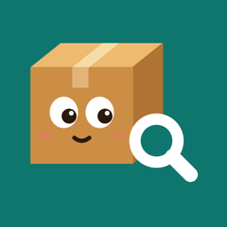

WhichBox
Support
Search for anything and WhichBox tells you which box it's in. If something isn't working, or you have an idea, I'd love to hear from you.
Contact
It helps to include your device (iPhone or iPad) and its iOS version, and what you were doing when the problem happened. I'm one person, so a reply may take a day or two.
How do I find something?
Type in the search field on the Home screen. Every match shows the box it's in and which room that box is in. You can also say “Find something in WhichBox” to Siri, or search from your Home Screen with Spotlight.
Printing QR labels
Open a box, tap … and choose Print QR Label. For a whole room, open the room, tap … and choose Print Labels.
- Labels are made for A4 sheets of 10 sticker labels, 99.1 × 57 mm each (for example Avery L7173 or the same size from other brands).
- Print at 100% or “Actual Size”, not “Fit to Page”, so the labels line up.
- Plain paper and tape work too.
Scanning labels and NFC tags
- Tap the scan button on the Home screen and point the camera at a label.
- NFC tags need an iPhone. iPads can scan QR labels but can't read NFC tags.
- To set up a tag, open a box, tap … and choose Write NFC Tag. Use NFC sticker tags such as NTAG213, NTAG215 or NTAG216. You can rewrite a tag for another box later.
- A label or tag only holds a link to the box, never what's inside.
Sharing a room with someone
Open the room, tap … and choose Share Room, then send the file by AirDrop, Messages or Mail. The other person taps the file to add the room to their own WhichBox. Sharing adds boxes and things. Changes made later don't sync on their own, so share the room again to send new boxes and items.
Backing up and moving to a new device
Your inventory moves with your device's own iCloud or computer backup. You can also make a WhichBox backup file: on the Home screen, tap … and choose Back Up. Keep it in Files or iCloud Drive. On the new device, tap the file, or choose Restore from Backup from the same menu.
Does WhichBox sync between my iPhone and iPad?
Not yet. Each device keeps its own inventory. To copy everything across, make a backup file on one device and restore it on the other.
Requirements
iPhone or iPad with iOS 26 or later. Name and tag suggestions use Apple Intelligence on devices that support it. Other devices still get tag suggestions.